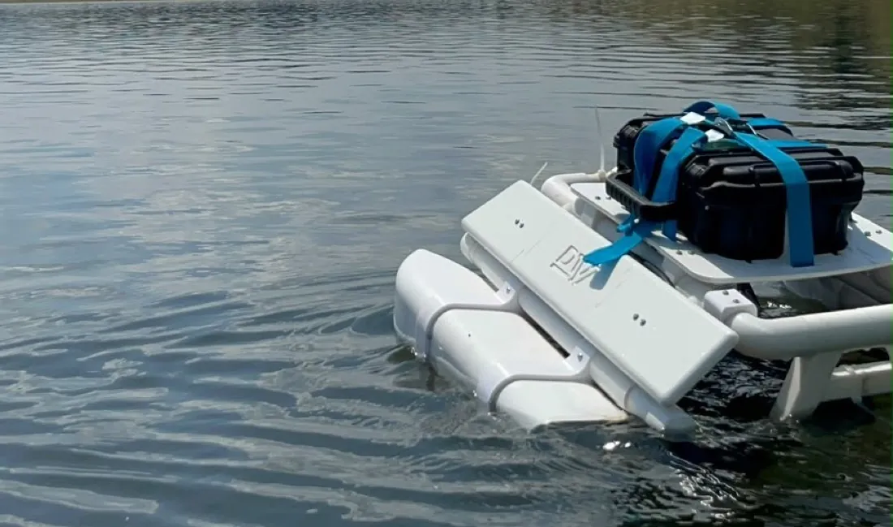
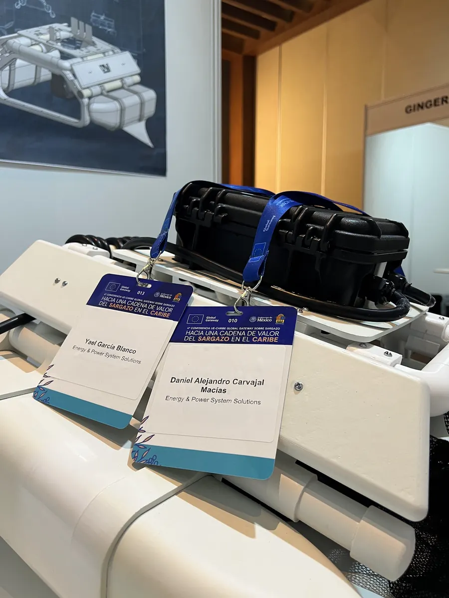
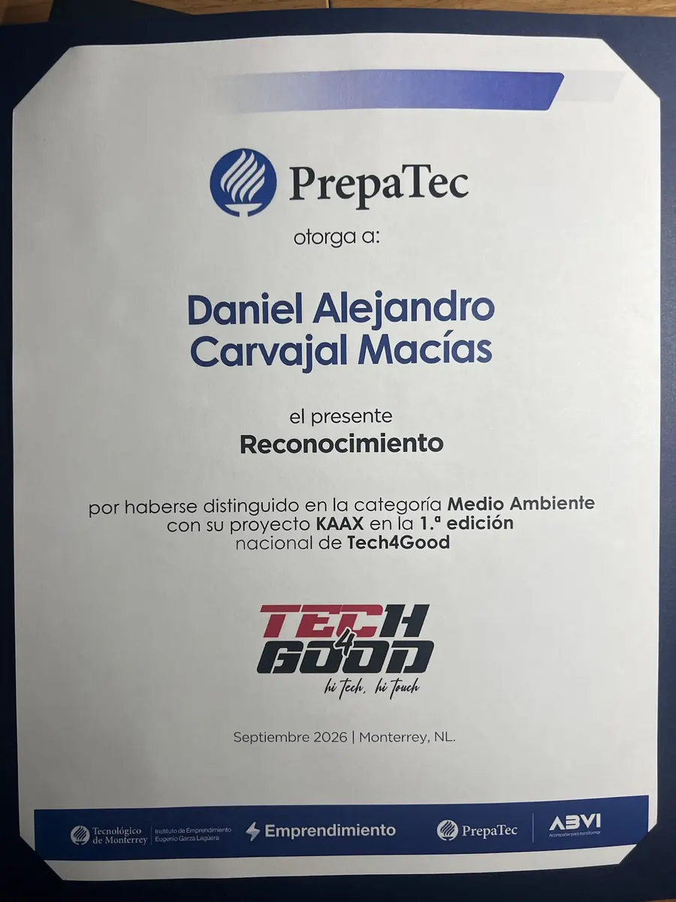
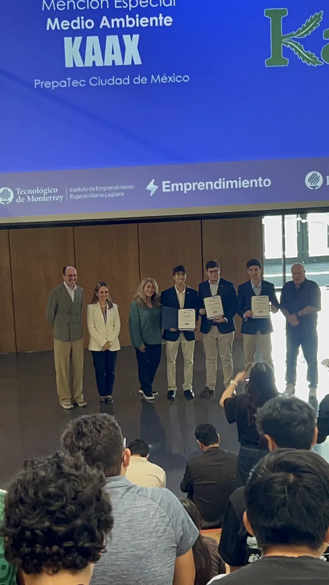
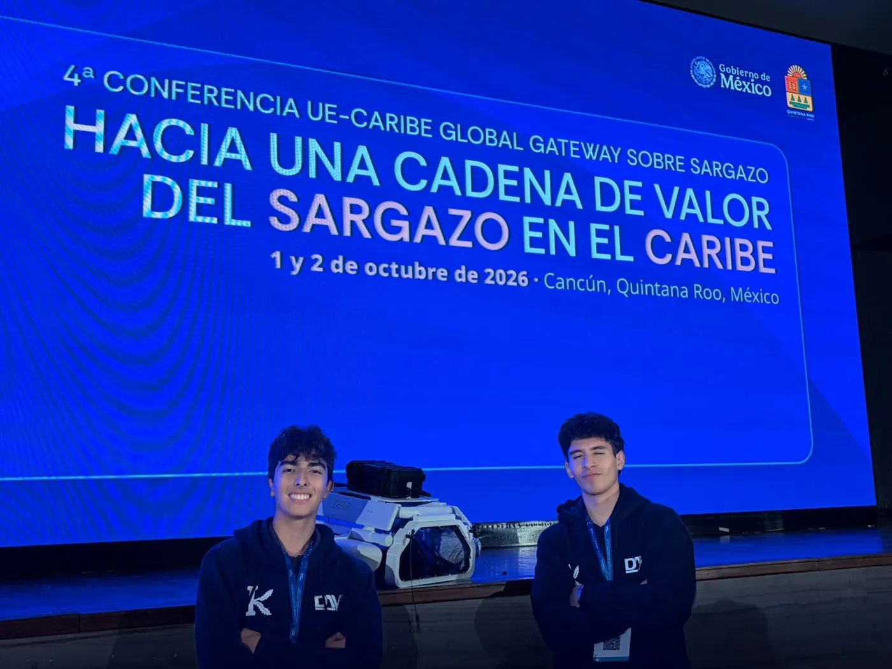
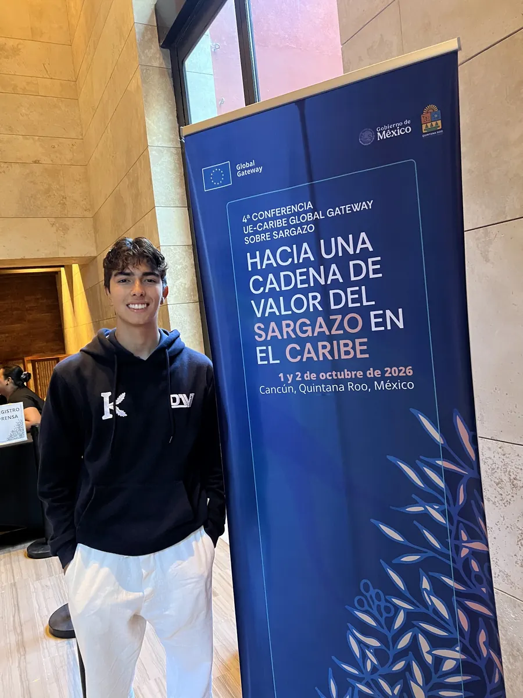
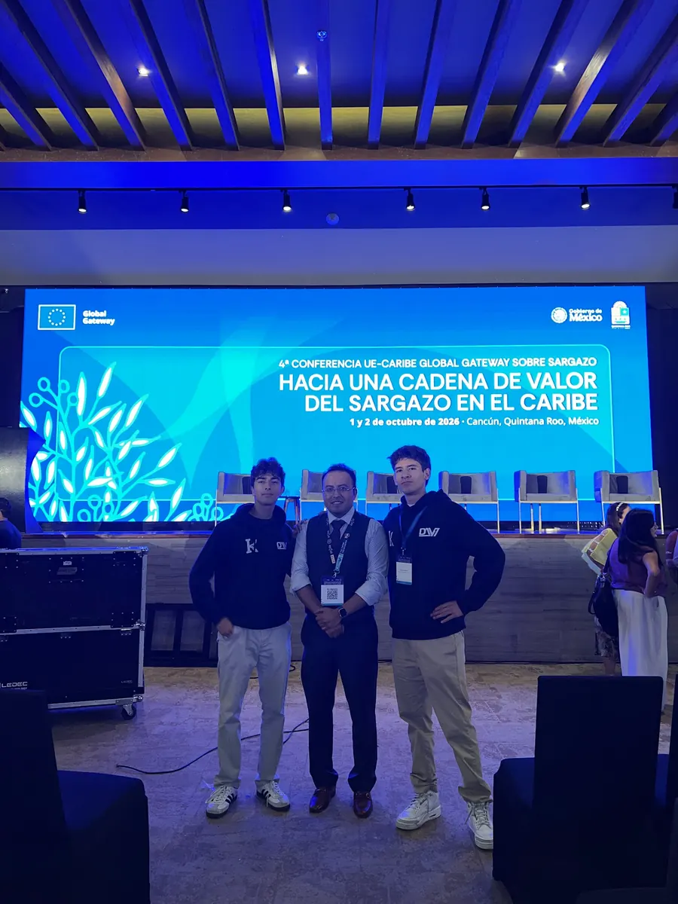
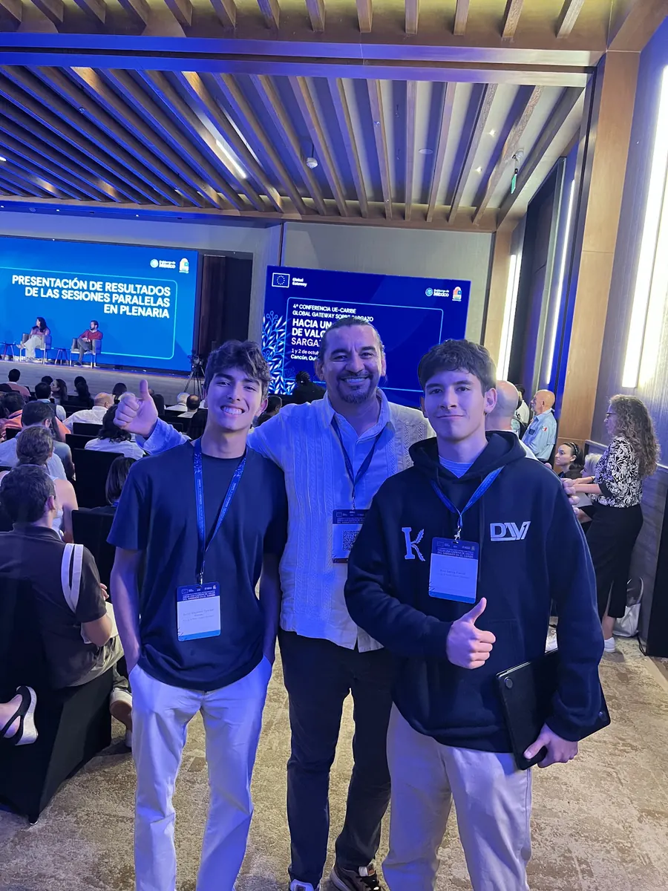
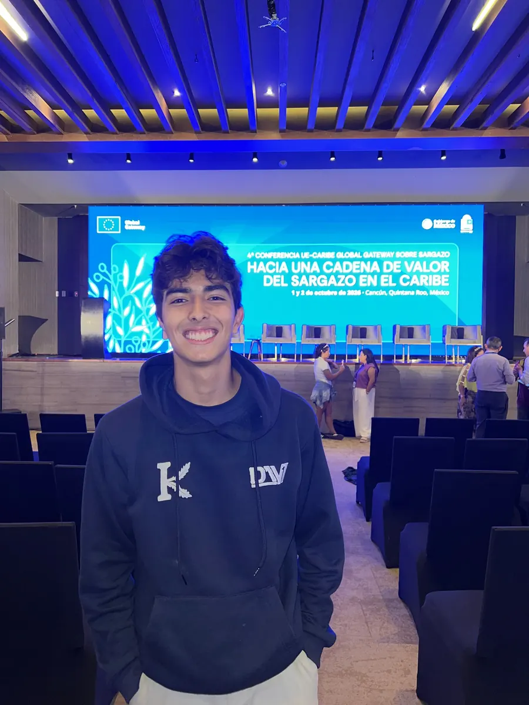

01¿Cuál fue mi proyecto?
Mi proyecto fue trabajar en mi aplicación a la beca de emprendimiento del Tecnológico de Monterrey.
No se trató de llenar un formulario: fue reunir, documentar y presentar lo que he construido como emprendedor para demostrar por qué merezco esa beca. La pieza central de la aplicación fue Kaax, el robot acuático de mi startup, DAY1Robotics.

02¿Por qué elegí este proyecto?
Porque quiero estudiar en el Tec de Monterrey, campus Monterrey, y conseguir la beca es lo que me da esa oportunidad.
Al mismo tiempo estaba trabajando con mi startup, DAY1Robotics, en nuestro robot Kaax. Juntar las dos cosas tenía todo el sentido: lo que ya estaba construyendo se volvió la mejor prueba de quién soy y de lo que puedo hacer.

03¿Cuál fue el resultado final?
Un proyecto validado, probado, con impacto real y completamente innovador.
- Validado
- Mención Especial en la categoría Medio Ambiente en la 1.ª edición nacional de Tech4Good, en Monterrey (septiembre de 2026).
- Probado
- Kaax ya se probó en agua real: en una presa y en hoteles.
- Con impacto real
- Llevamos Kaax a la 4.ª Conferencia UE-Caribe Global Gateway sobre Sargazo, en Cancún, el 1 y 2 de octubre de 2026.
- Innovador
- Un robot ligero que trabaja flotando: no pisa la duna, no compacta la arena y no necesita maquinaria pesada.
La beca pide un video que explique lo que hago y por qué merezco la beca.
Para hacer el mejor video posible fui grabando fragmentos en mis conferencias y en las pruebas de Kaax en hoteles. Estos son algunos de los momentos que lo forman.
Tech4Good · Monterrey


Conferencia UE-Caribe sobre Sargazo · Cancún





En el agua
04¿Qué aprendí?
Que no hay nada tan difícil. Lo único de lo que te puedes arrepentir es de no tomar una oportunidad.
Una puerta abierta te da la oportunidad de abrir dos más.
¿Qué crees que pasará si las abres todas?
Tendrás miles de caminos que cruzar.